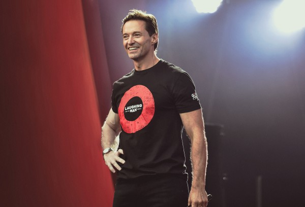

National Geographic в партнерстве и P&G выпустили документальный сериал Activate, премьера которого в Украине состоится 9 сентября.
National Geographic в партнерстве с P&G презентуют документальный сериал Activate о глобальном движении по борьбе с бедностью, неравенством и экологическими проблемами. Премьера 6-серийного документального сериала Activate состоится 9 сентября 2019 в 22:00.
Целью проекта является повышение осведомленности по проблеме бедности и мобилизация граждан к содержательным и длительных изменений на платформе Global Citizen, чтобы устранить проявления бедности во всем мире до 2030 года.
Каждый эпизод Activate посвящен отдельной кампании, проводимой Global Citizen с присоединением активистов для решения проблемы, связанной с первопричинами бедности. Среди известных активистов Хью Джекман, Приянка Чопра Джонас, Бекки Джи, Ашер, Common, Рэйчел Броснаген, Гейл Кинг, Бонанг Матхеба, Фаррелл Уильямс, Даррен Крисс и Узо Адуба.
Темы эпизодов включают устранение крайней бедности, прекращение денежного залога, преодоление барьеров в обучении девушек, финансирование образования для детей-переселенцев, прекращение загрязнения пластиком и помощь в решении водного кризиса. Читай также: Канал “Украина“ работает над новым сериалом “Наследники“
Сериал будет транслироваться в 2019 году в 172 странах 43 языках. В Украине каждая из 6 серий будет выходить каждый понедельник в 22:00 с 9 сентября по 14 октября.